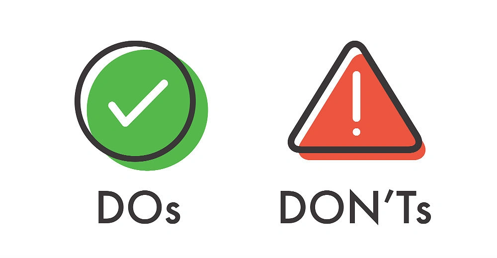

.jpg)

Social media is a powerful tool for building your brand, but it requires strategic management. Here are the key do’s and don’ts to guide you:
DO’s:
Know Your Audience
Conduct research to understand your audience’s demographics, preferences, and online behavior. Tailor your content to their needs.
Create Engaging Content
Share a mix of posts—informative, entertaining, and interactive. Use videos, polls, and visually appealing graphics to capture attention.
Post Consistently
Develop a content calendar to ensure you’re posting regularly. Consistency helps maintain engagement and visibility.
Monitor and Respond Promptly
Social media is a two-way street. Respond to comments and messages promptly to foster community and trust.
Analyze and Optimize
Use analytics tools to track performance and adjust your strategy based on what works best.
DON’Ts:
Avoid Overposting
Bombarding your audience with too many posts can lead to unfollows. Balance is key.
Don’t Ignore Negative Feedback
Address complaints professionally and seek to resolve issues. Ignoring negativity can harm your reputation.
Avoid Being Overly Promotional
Focus on adding value rather than just selling. Too many sales pitches can alienate your audience.
Don’t Post Without Proofreading
Errors in your posts can damage your credibility. Always double-check for typos and inaccuracies.
Don’t Jump on Every Trend
Stay authentic to your brand. Not all trends align with your message or audience.
By following these do’s and avoiding the don’ts, you can effectively manage your social media platforms and build a thriving online presence.
Noanne C.